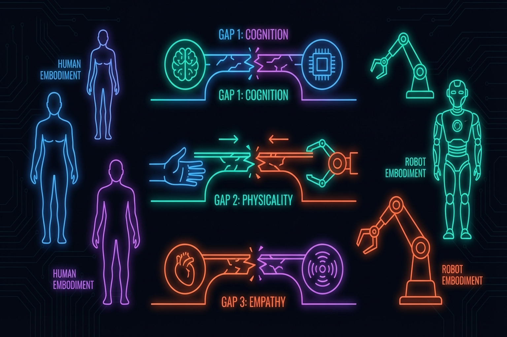
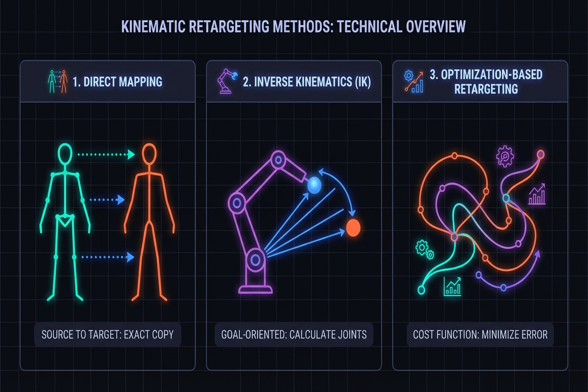
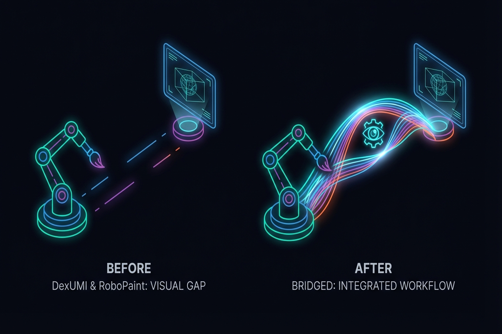
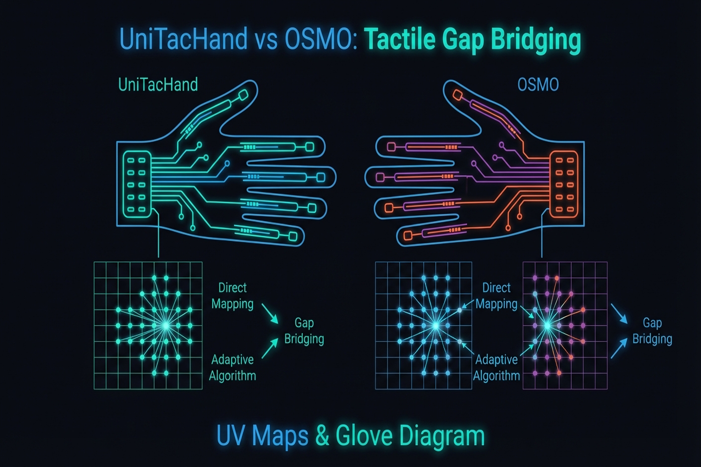
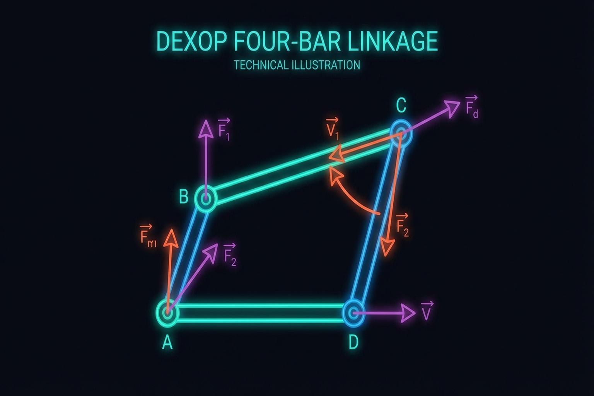
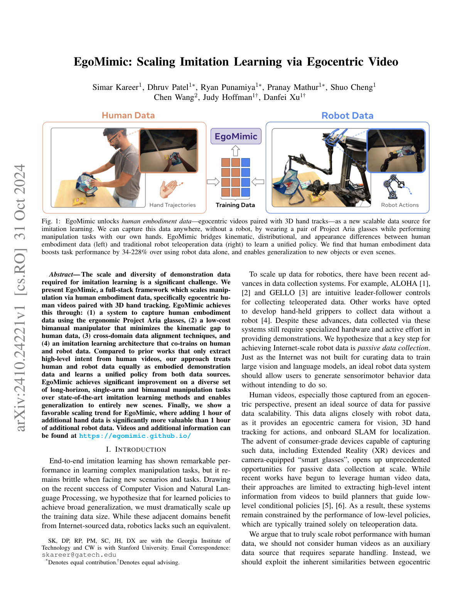
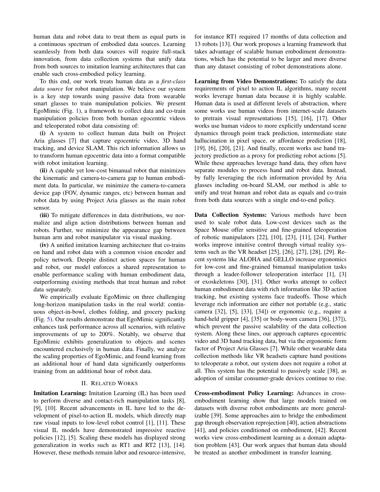

Chapter 10: From Human to Robot — Embodiment Retargeting
Overview
Converting human demonstration data (Chapter 6) into robot policies requires overcoming the cross-embodiment gap between human and robot. The human hand's 27 DoF and a robot hand's 7-22 DoF represent fundamentally different kinematic structures, with differences in visual appearance and tactile properties as well. This chapter addresses three dimensions of the gap — kinematic, visual, and tactile — and their respective solutions, as well as emerging paradigms of human-robot co-training and teleop-free policy learning from human data alone.
After reading this chapter, you will be able to... - Distinguish the three dimensions of the cross-embodiment gap. - Compare kinematic retargeting approaches (AnyTeleop, ImMimic, DexH2R, ManipTrans). - Understand recent visual gap solutions including Mirage and H2R. - Understand UniTacHand #16 and OSMO #18's tactile gap solutions. - Explain the scaling laws of human-robot co-training (EgoMimic, EgoScale). - Assess the possibilities and limitations of teleop-free approaches (X-Sim, EgoZero, VidBot). - Explain why no general solution exists for the tactile domain gap.
10.1 The Cross-Embodiment Gap: Kinematic, Visual, and Tactile
| Gap Dimension | Human | Robot | Core Problem |
|---|---|---|---|
| Kinematic | 27 DoF | 7-22 DoF | Joint structure, range, coupling differences |
| Visual | Skin, nails, flexible | Metal, plastic, rigid | Visual policy appearance dependence |
| Tactile | ~17,000 receptors | 0-17 sensors | Density, type, distribution entirely different |
Key observation from Seminar 1: UniTacHand is the only paper that has addressed the tactile domain gap, and no general methodology exists.

10.2 Kinematic Retargeting: AnyTeleop, ImMimic, DexH2R
AnyTeleop (2023)
Qin et al. [2023, RSS] Dex-Retarget: human keypoints → robot joint positions. Limitation: naive mapping loses physical feasibility.
ImMimic (2025)
Liu et al.[2]: Interpolation between large-scale human trajectories and few teleoperation trajectories. Combines human data diversity with teleop physical feasibility.
Key Paper: Liu, Y., et al. (2025). "ImMimic: Large-scale Human Trajectory + Few-shot Teleoperation Interpolation." Data augmentation through interpolation, mitigating the cross-embodiment gap from the data side.
DexH2R (2024)
Task-oriented retargeting: extracts the intent of human demonstrations and reproduces it within the robot's kinematics.
ManipTrans (CVPR 2025)
Lv et al. [2025, CVPR] — the first large-scale framework for bimanual manipulation retargeting:
- Retargets human bimanual trajectories to robot bimanual hands
- DexManipNet: dataset of 3,300+ bimanual manipulation episodes
- Optimization-based retargeting ensuring both physical feasibility and contact consistency
- Extends beyond single-hand retargeting into bimanual coordination
Park et al. (CMU/SNU, 2025)
Park et al. [arXiv, Jan 2025]:
- Aligns the joint motion manifolds of human and robot hands
- Latent-space mapping naturally preserves physical feasibility
- Retargeting accuracy 0.59 vs. 0.39 over baseline
- Manifold-based approach enables rapid adaptation to new robot hands
Human2Sim2Robot
Human video → simulation reproduction → robot policy. Extension of internet video utilization (Chapter 6.5).

10.3 Bridging the Visual Gap: DexUMI #8, RoboPaint #15, Mirage, H2R
DexUMI (2025)
SAM2 inpainting: Erases human hand from camera images, replaces with robot hand. Visual policies become independent of human hand appearance. Kinematic gap resolved separately via exoskeleton.
RoboPaint (2025)
3DGS reconstructs real scenes in simulation, reducing the visual sim-to-real gap (Chapter 9.4).
Mirage (RSS 2024)
Chen et al. [2024, RSS] — Cross-Painting for zero-shot visual transfer:
- Cross-painting technique visually transforms human hands into robot hands
- Achieves zero-shot visual transfer without additional training
- Directly converts human demonstration videos into robot-perspective images for policy learning
- Complementary to DexUMI's inpainting — Mirage does style transfer, DexUMI does full replacement
H2R (2025)
Human-to-Robot Video Augmentation:
- Transforms human demonstration videos into robot visual data for pretraining
- Automatically generates synthetic robot video from large-scale human video
- Maximizes data efficiency for visual representation learning
- A novel approach: bridging the visual gap at the pretraining stage
Masquerade (2025)
A framework for transforming human video into robot-compatible visuals:
- Automatically converts visual elements of human demonstrations for the robot domain
- Combines masking and regeneration in a style transfer pipeline
- Makes existing human video datasets immediately usable for robot learning

10.4 Bridging the Tactile Gap: UniTacHand and OSMO
The tactile gap is the hardest of the three dimensions to resolve.
UniTacHand (2025)
Zhang et al.[2]:
- MANO #17 UV map: Unfolds hand surface into 2D UV space
- Human glove tactile → projected onto MANO UV map
- Robot hand tactile → projected onto same MANO UV map
- Shared representation space for tactile policy learning
- The only paper addressing the tactile domain gap
Key Paper: Zhang, Y., et al. (2025). "UniTacHand: Cross-Embodiment Tactile Transfer via MANO UV Map." The first systematic treatment of tactile cross-embodiment transfer, using MANO UV maps as a shared representation.
OSMO (2025)
OSMO glove [arXiv:2512.08920] (Chapter 6.3):
- Embodiment Bridge: Same tactile glove on both human and robot
- Physically eliminates the tactile domain gap — identical sensor means no representation difference
- 12 three-axis magnetic sensors, open-source
Fundamental difference between the two approaches:
- UniTacHand: Software solution (representation alignment)
- OSMO: Hardware solution (physical sharing)

10.5 Mechanical Coupling: The DEXOP #10 Four-Bar Linkage Approach
DEXOP[8] directly mechanically couples human and robot fingers via four-bar linkage:
- Resolves all three gaps simultaneously:
- Kinematic: Mechanical 1:1 mapping
- Visual: Robot acts directly, only robot visible to camera
- Tactile: Direct contact feedback to human
- 8x faster data collection than teleoperation
- 51.3% vs. 42.5% success (vs. teleoperation)

10.6 Human + Robot Co-training
The most prominent emerging paradigm is co-training — jointly training on human demonstration data and robot data. Rather than requiring kinematic retargeting, human data directly improves robot policies.
EgoMimic (Georgia Tech, 2024)


Kareer et al. [arXiv, 2024]:
- Co-trains on human egocentric video and robot data
- 1 hour of human demonstrations outperforms 2 hours of robot data — counterintuitive but reproducible
- +34-228% performance improvement over robot-only training
- The richness and diversity of human data compensates for robot data quantity
Key Paper: Kareer, S., et al. (2024). "EgoMimic: Scaling Imitation Learning via Egocentric Video." arXiv preprint. Demonstrates the counterintuitive result that 1 hour of human egocentric data outperforms 2 hours of robot data. Establishes the foundation for the human-robot co-training paradigm.
EgoScale (NVIDIA, 2026)
EgoScale [arXiv, Feb 2026]:
- Leverages 20,854 hours of large-scale human egocentric data
- Discovers a log-linear scaling law between human data scale and robot performance: R² = 0.998
- +54% improvement over robot-only training
- Predictable performance gains with data scale — enables estimating return on investment
Key Paper: NVIDIA. (2026). "EgoScale: Scaling Robot Policy Learning with Human Egocentric Data." arXiv preprint. Discovers a log-linear scaling law (R² = 0.998) from 20,854 hours of human data. Demonstrates that human data scaling provides predictable gains for robot learning.
AoE (2026)
AoE (Augmentation of Experience) [arXiv, Feb 2026]:
- Small-scale mixture of 50 teleop + 200 human ego demonstrations
- Close Laptop task: success rate 45% → 95%
- Small amounts of human data effectively compensate for limited robot data
- A practical co-training approach under resource constraints
pi0 #2 Human-to-Robot Transfer (Physical Intelligence, 2025)
Physical Intelligence [Dec 2025]:
- Co-finetuning the pretrained pi0 foundation model with human data
- 2x performance improvement across 4 generalization scenarios (new objects, environments, tasks, robots)
- Emergent alignment: the model automatically learns human-robot correspondences without explicit retargeting
- Cross-embodiment transfer in the Foundation Model era — at sufficient scale, explicit mapping becomes unnecessary

10.7 Teleop-Free Approaches
A more radical direction entirely eliminates robot data, learning robot policies from human data alone. If successful, this fundamentally removes the cost and bottleneck of teleoperation.
X-Sim (Cornell, CoRL 2025 Oral)
Dan et al. [2025, CoRL Oral]:
- A single human RGBD video → RL training in simulation → real robot deployment
- Achieves real robot control with zero robot data
- Complete realization of the Real-to-Sim-to-Real pipeline
- CoRL 2025 Oral — demonstrates the feasibility of generating robot policies from human demonstrations alone
EgoZero (2025)
EgoZero[25]:
- Learns robot policies from smart glasses egocentric video alone
- Achieves 70% success rate across 7 manipulation tasks
- Zero robot data — uses only wearable device data from daily activities
- The most natural form of human demonstration collection, requiring no special equipment (gloves, exoskeletons)
VidBot (TU Munich, CVPR 2025)
VidBot [2025, CVPR]:
- Internet video → 3D affordance extraction → zero-shot robot control
- +20% improvement over existing robot data approaches
- Transforms the internet's vast video data into robot learning resources
- Affordance-based representations naturally abstract away the embodiment gap
Human2Bot (Autonomous Robots, 2025)
Human2Bot [Autonomous Robots, 2025]:
- Human video → task similarity reward design → zero-shot robot control
- No robot data required — human video serves as the reward function
- Indirect knowledge transfer through reward shaping
- Task-level abstraction bypasses the embodiment gap entirely

10.8 Open Challenges: Tactile Domain Gap and the Limits of New Paradigms
One of Seminar 1's most important insights: no general methodology exists for solving the cross-embodiment gap in the tactile domain.
- UniTacHand: MANO UV map-based, limited to MANO-compatible hands
- OSMO: Requires identical glove, incompatible with existing sensors
- DEXOP: Mechanical coupling, strongly hand-form dependent
Future research directions needed:
- Sensor-agnostic tactile transfer: Extending AnyTouch/Sensor-Invariant to cross-embodiment (Chapter 3.3)
- Universal tactile UV maps: Shared representations applicable beyond MANO
- Simulation-based tactile transfer: Overcoming the tactile gap via DiffTactile
Open Problems in Co-training and Teleop-Free Approaches
The new paradigms covered in Sections 10.6 and 10.7 are powerful, but several challenges remain:
- Counterintuitive scaling: EgoMimic's result (1hr human > 2hr robot) shows that diversity of human data is key, but which kinds of diversity matter remains unclear.
- Human-only robot control scope: X-Sim, EgoZero, and VidBot demonstrate robot control from human data alone, but the range of successful tasks remains limited.
- Universality of scaling laws: Whether EgoScale's log-linear law (R² = 0.998) generalizes across diverse tasks and robot platforms requires further validation.
- Conditions for emergent alignment: pi0's results may be a phenomenon that only emerges at Foundation Model scale; the necessary conditions are poorly understood.
- Absence of tactile data: Both co-training and teleop-free approaches rely on visual data; transfer of tactile information remains entirely unaddressed.

Summary and Outlook
Embodiment Retargeting proceeds along four dimensions: kinematic (AnyTeleop, ImMimic, ManipTrans), visual (DexUMI, RoboPaint, Mirage), tactile (UniTacHand, OSMO), and mechanical (DEXOP). Recently, human-robot co-training (EgoMimic, EgoScale, pi0) and teleop-free approaches (X-Sim, EgoZero, VidBot) are driving a fundamental paradigm shift.
Three counterintuitive findings are redefining the field's direction:
- 1 hour human > 2 hours robot (EgoMimic): human data diversity dominates quantity
- Human-only robot control is possible (X-Sim, EgoZero, VidBot): robot data may be unnecessary
- Log-linear scaling (EgoScale, R² = 0.998): returns on human data investment are predictable
Yet tactile cross-embodiment transfer remains addressed by only one paper (UniTacHand), and neither co-training nor teleop-free approaches handle tactile information. This remains the field's largest open problem.
The "Shared Sensing Platform" direction proposed in Chapter 13 — generalizing OSMO/UniTacHand-style cross-embodiment tactile transfer — is the key research direction for closing this gap.
The next part addresses system integration and outlook (Chapter 11: Research Integration).
References
- Qin, Y., et al. (2023). AnyTeleop: A general vision-based dexterous robot teleoperation system. RSS 2023.
- Liu, Y., et al. (2025). ImMimic: Large-scale human trajectory + few-shot teleoperation interpolation.
- Li, Y., et al. (2024). DexH2R: Task-oriented dexterous manipulation from human to robots. arXiv preprint.
- Xu, M., Zhang, H., Hou, Y., Xu, Z., Fan, L., Veloso, M., & Song, S. (2025). DexUMI: Using human hand as the universal manipulation interface for dexterous manipulation. arXiv preprint. [#8](https://terry.artlab.ai/en/posts/2505-dexumi)
- Various. (2025). RoboPaint: 3DGS for Real-Sim-Real visual transfer. [#15](https://terry.artlab.ai/en/posts/2602-robopaint)
- Zhang, C., Xue, Z., Yin, S., Zhao, B., et al. (2025). UniTacHand: Unified spatio-tactile representation for human to robotic hand skill transfer. arXiv preprint. [#16](https://terry.artlab.ai/en/posts/2512-unitachand)
- Yin, J., Qi, H., Wi, Y., Kundu, S., Lambeta, M., Yang, W., Wang, C., Wu, T., Malik, J., & Hellebrekers, T. (2025). OSMO: Open-source tactile glove for human-to-robot skill transfer. arXiv preprint. arXiv:2512.08920. [#18](https://terry.artlab.ai/en/posts/2512-osmo-tactile-glove)
- Fang, H.-S., Romero, B., Xie, Y., et al. (2025). DEXOP: A device for robotic transfer of dexterous human manipulation. arXiv preprint. arXiv:2509.04441. [#10](https://terry.artlab.ai/en/posts/2509-dexop)
- Dan, Y., et al. (2025). X-Sim: Cross-embodiment learning via real-to-sim-to-real. CoRL 2025 (Oral).
- Si, Z., Qian, K., Sontakke, N., et al. (2025). ExoStart: Efficient learning for dexterous manipulation with sensorized exoskeleton demonstrations. arXiv preprint. [#9](https://terry.artlab.ai/en/posts/2506-exostart)
- Shaw, K., Bahl, S., & Pathak, D. (2024). Learning dexterity from human hand motion in internet videos. arXiv preprint. arXiv:2404.xxxxx.
- Romero, J., Tzionas, D., & Black, M. J. (2017). Embodied hands (MANO). SIGGRAPH Asia 2017. [#17](https://terry.artlab.ai/en/posts/2201-mano-hand-model)
- Various. (2025). Human2Sim2Robot: Internet video to robot policy pipeline.
- Various. (2025). AnyTouch: Unified static-dynamic tactile representation. arXiv:2502.12191.
- Various. (2025). Sensor-invariant tactile representation. OpenReview.
- Lv, Y., et al. (2025). ManipTrans: Efficient bimanual dexterous manipulation retargeting. CVPR 2025.
- Park, J., et al. (2025). Joint motion manifold for human-to-robot hand retargeting. arXiv preprint, Jan 2025.
- Chen, B., et al. (2024). Mirage: Cross-embodiment zero-shot transfer via cross-painting. RSS 2024.
- Various. (2025). H2R: Human-to-robot video augmentation for policy pretraining. arXiv preprint.
- Various. (2025). Masquerade: Human video to robot visual transformation. arXiv preprint.
- Kareer, S., et al. (2024). EgoMimic: Scaling imitation learning via egocentric video. arXiv preprint.
- NVIDIA. (2026). EgoScale: Scaling robot policy learning with 20K hours of human egocentric data. arXiv preprint, Feb 2026.
- Various. (2026). AoE: Augmentation of experience via human ego demonstrations. arXiv preprint, Feb 2026.
- Physical Intelligence. (2025). pi0 human-to-robot transfer: Co-finetuning for cross-embodiment generalization. Technical Report, Dec 2025. [#2](https://terry.artlab.ai/en/posts/2410-pi0-vla-flow-model)
- Various. (2025). EgoZero: Zero robot data policy learning from smart glasses. arXiv preprint.
- Various. (2025). VidBot: Internet video to 3D affordance for zero-shot robot control. CVPR 2025.
- Various. (2025). Human2Bot: Task similarity reward from human video for zero-shot robot control. Autonomous Robots, 2025.